A Vinyasa Yoga Routine for Great Good 😛
Note: Things with a WX in front of them are more advanced and should be done after X weeks. If they feel comfortable, things with a W0 can be stopped after the first week.
Disclaimer: This routine works for me, but might not work for you. Do not try without supervision if you don’t know about these, or have any medical conditions. This is here for my easy reference, but if it helps anyone, that is a great good.
Vinyasa: A sequence of active yoga asanas with directed breathing with the aim to generate heat in the body.
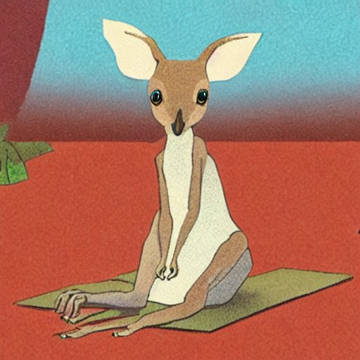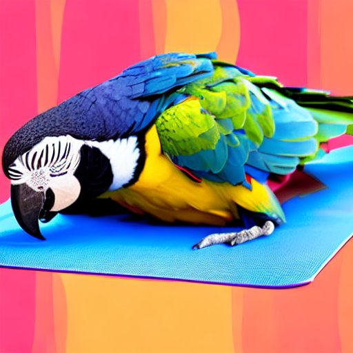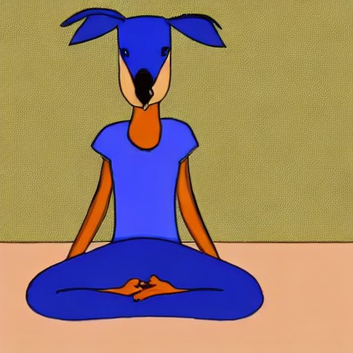
DANDASANA PADA HASTASANA (BAD) BUDDHA KONASANA
Morning
- Naabhi-shwaas: Deep breathing with eyes closed, hands in Chihna position
- Hands in Namaskara position, chant Om three times
- W1 Replace Om with Shaanti Mantra
- Rub your hands, take them to your eyes, and gently massage your face
- Open your eyes slowly and look directly into your hands. Namaste.
- Kapalbhati: pull your stomach inwards then upwards: 40x2 (feel your breath in between)
- W1 Bhastrika: hands up and down, fists open and closed, both forceful inhalation and exhalation x30 x2
- W0 Mukha Dhauti:
- Hands on knees, bent knees, inhale with nose, exhale with mouth
- Full exhale, and pull stomach inwards after it
- W0 Spot-Jogging:
- Stand up, do half jogs
- Heels to your bums
- Half jogs
- Knees to your chest
- Half jogs
- Criss-cross left right / high jumps
- Half jogs
- Stop, and feel the heartbeat and heat you’ve produced
- Vinyasa Suryanamaskara A x4:
- Samastithi: Stand straight at the front of your mat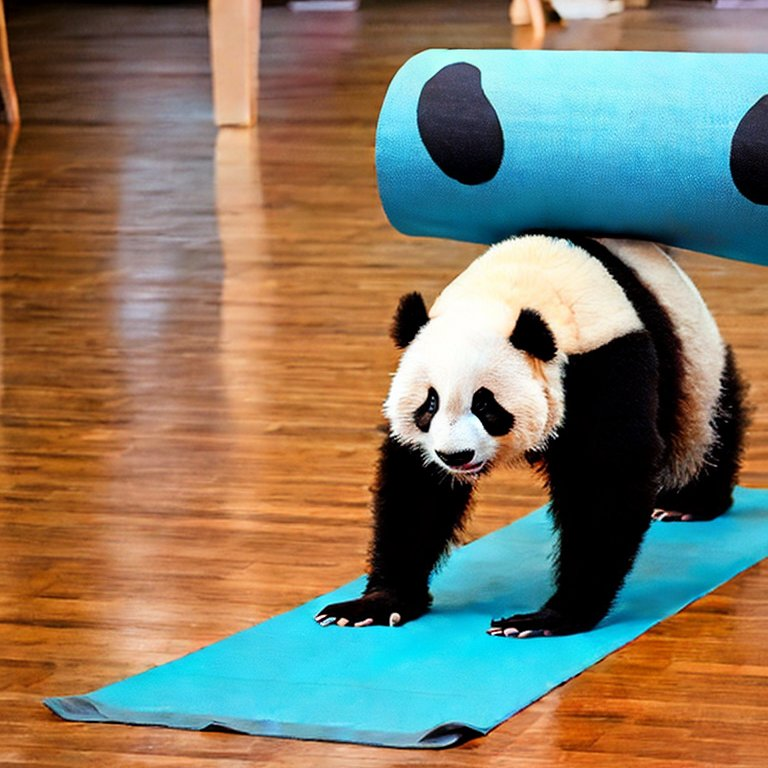
- Ekam: Parvatasana / Tadasana
- Dvai: Padahastasana
- Treni: Uttanasana
- Chatvari: Jump & Chaturanga Dandasana ADHO
- Pancha: Urdhva Mukha Shvanasana MUKHA
- Shat: Adho Mukha Shvanasana: unlike this: SHVANASANA
- Hold for five deep Ujjayi breaths
- Sapta: Jump forwards to Uttanasana
- Ashto: Exhale into Padahastasana
- Nava: Inhale into Parvatasana
- Dasha: Exhale into Samasthithi
- W1 Vinyasa Suryanamaskara B x3:
- Utkatasana, Padasthasana, Uttanasana, Chaturanga dandasana, Urdha Mukha Shvanasana, Adho Mukha Shvanasana, Veerbhadra Asana A Right, Chaturanga dandasana, Urdha Mukha Shvanasana, Adho Mukha Shvanasana, Veerbhadra Asana A Left, Chaturanga dandasana, Urdha Mukha Shvanasana, Adho Mukha Shvanasana, 5 breaths, Uttanasana, Padangushthasana, Utkatasana
- Hips-hams-and-back track:
- Trikonasana: 3 feet gap in legs, touch right toe with right hand, hands straight
- W0 Parshvakonasana: 4 geet gap, toes to one side, bend on one knee, forearm on thigh, other hand from top, facing the floor, spine straight
- W1 Utthita Parshvakonasana: keep hand to left of right feet and left h. straight
- W1 replace with: then right of it and left hand above head
- W1 Prasarita Padottanasana: legs straight outward
- Four variations: A, B, C, D
- W1 Parsvottanasana: 3 feet gap, legs front and back, bend forwards and interlock hands at the back, try to bring hands to front from above.
- W0 Padangusthasana: bent knees, bend forwards, touch toes, then straight legs.
- W1 Utthita Hasta Padangusthasana: right leg bent, hold toe with right hand then straighten the leg. Repeat for left.
- W1 Veerbhadra Asana: A, B, and C.
- Vrikshasana track:
- Right leg on thigh, namaskara, then hands on top, same with left leg
- W1 Take heels to navel and then
- W2 bend down, same with left
- Utkatasana variation of Vinyasa to change from a standing to a sitting position:
- Same till Adho Mukha Shvanasana
- Then do Utkatasana (hold 5), then Adho Mukha Shvanasana
- Then Veer Bhadrasana sequence (both A and B)
- Then go through straight hands, cross legs with one jump, and sit in Dandasana
- W0 Dandasana: L shape
- Upavistha Konasana: Sit, stretch legs to side, then touch toes and bend forwards
- W1 Urdhva Upavistha Konasana: legs in the air
- Navasana: A -> B -> C
- W1 Tulasana: In Navasana breaks, cross your legs and lift yourself up with hands on the sides. Stay up for 3-5 seconds.
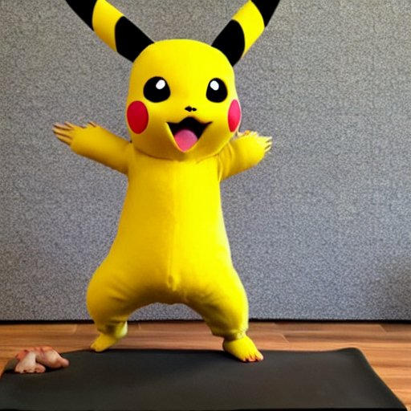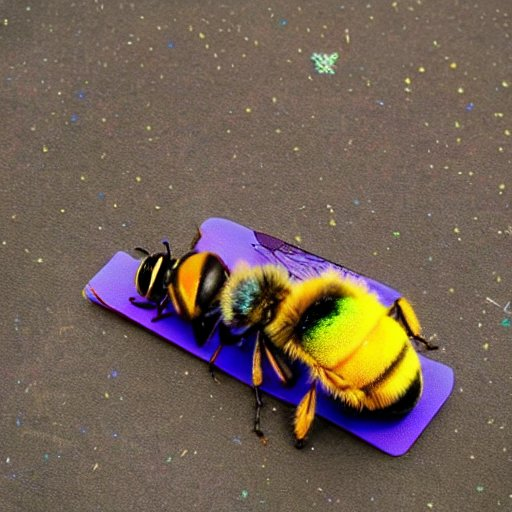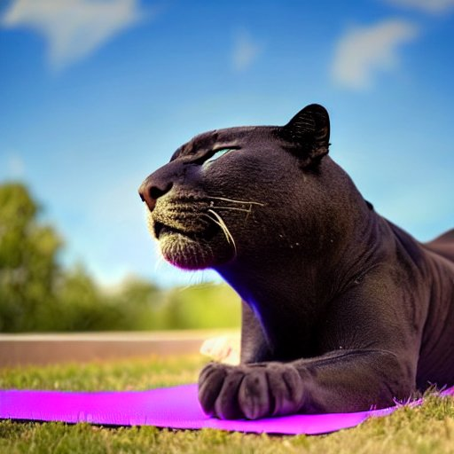
PHALAKASANA A MAKARASANA PIKASANA
- Paschimottanasana
- W1 Hands holding feet from the side
- W1 Triaṅga mukhaikapāda paścimottānāsana
- W1 Janu Sirsasana: Sitting vriksh-asana then touching toes
- W1 Sirsasana
- First prepare for it, then go for it.
- Baddha Konasana: butterfly pose and bend forwards
- Marichyasana C: Sit in Dandasana, then bend right leg and bring left elbow to right of it, twisting the body and taking deep breaths.
- W0 Chatush Padasana (table top)
- W1 Purvottanasana: Variant with straight knees and straight body, toes down
- Cooling down asanas:
- Setu Bandhasana
- W1 just hold once instead of x10
- W2 curl your shoulders outwards towards the ground
- W1 Sarvangasana
- W1 Halasana
- W2 Karnapidasana
- W3 Matsyasana
- Shavasana
- Chants:
- A Kara chanting: focus on Chest.
- U Kara: on Heart
- M Kara: on Face
- Hands in Namaskara position, chant Om three times
- Rub your hands, take them to your eyes, and gently massage your face
- Open your eyes slowly and look directly into your hands. Namaste.
Evening
- Naabhi-shwaas: Deep breathing with eyes closed, hands in Chinha position
- First, focus on expanding your stomach, then chest, then both (Yogic Breathing)
- Hands in Namaskara position, chant Om three times
- Rub your hands, take them to your eyes, and gently massage your face
- Open your eyes slowly and look directly into your hands. Namaste.
- W0 Sit cross legged, straight hands horizontal, open and close tight fists x5
- Janu Naman:
- Bend right knee and stretch it up and down with heels up x10 x2 for each side
- Janu Chakra:
- Hug your right thigh and make big circles with feet x10 x2 for each side
- Bhumi-naman:
- Turn right from Dandasana and touch ground behind you with forehead
- Repeat for left
- W0 Bhujangasana
- W0 Down on knees and straight hands:
- Marjaryasana: cat pose
- Bitilasana: cow pose
- make circles with body around knees x10
- Right leg straight back then touch forehead, x10, x2 for each side
- Parighasana
- Sit with crossed legs:
- Ardha Titali: Right on left thigh, then left on right
- W1 Hug leg with straight spine, knee to chest
- Purna Titali: Both together and move up down
- Stand on knees, and:
- <>: move right leg straight to right, and left leg up then stretch right
- Repeat with left
- <> Then put your weight on left hand on ground and take right leg up x10 + hold
- Repeat with left
- W1: Parivrtta Janu Sirsasana: legs stretched outwards, fix left elbow and right hand over the head and touch right toe with straight spine. Repeat for left.
- Stand up without using hands, and:
- W0 Take right hand up max with inhale, then take it leftwards, while keeping equal weight on both legs, hold (10 sec), repeat for left
- Utkatasana: Bend your knees, hands up, look up, and hold (10 sec)
- Do 10 Dand Baithaks with hands closed up towards neck, straight spine
- Stretch your legs 3-4ft, then:
- Prasarita Padottanasana: touch toes and bend down with straight spine
- Parivrtta parsvakonasana: parsvakonasana with joined hands.
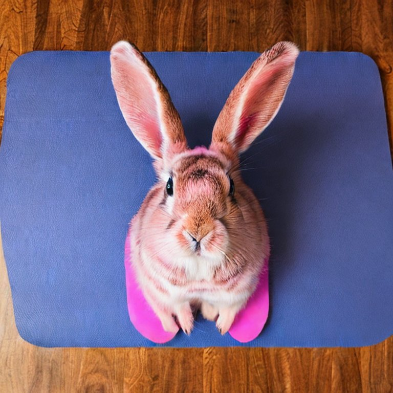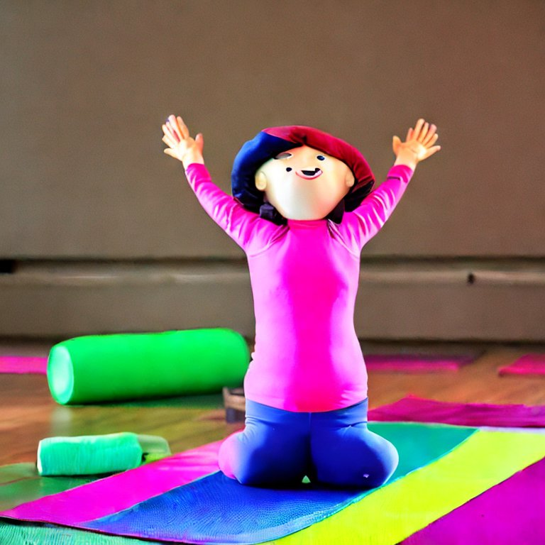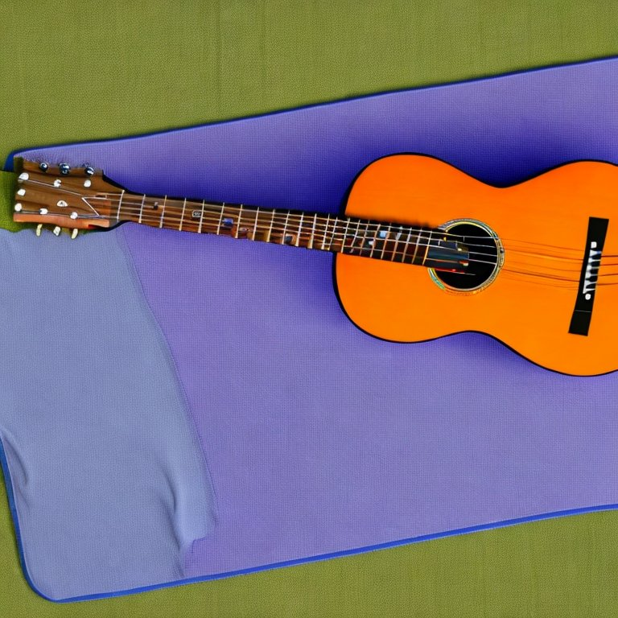SUPTA VAJRASANA UTKATASANA SHAWSHANK ASANA
- Malasana track:
- Squats x10 x2
- Take right hand up with left hand on right shin and look up
- Repeat for left
- Slightly get up till your thighs are horizontal and hold (10 sec)
- W1 Frog Walk: Walk 20 metres in Malasana
- W2 Camel Walk
- W1 Kakasana / Bakasana: tuck elbows, bend forward, lift the body on arms
- Stand with right leg two steps behind, both knees straight. Then take your hands up and then bend down and touch right knee with ground and back up x10 x2 for left.
- W0 Vajrasana
- Shashank-asana: Go forwards and tough the ground with hands sideways back
- W1 Supta Vajrasana: feet a little sidewards, then go as back as you can, lie backwards.
- Down on knees and palms:
- Take right knee up sideways, keeping it at 90 degrees x10 + hold
- Repeat for left
- Take right knee up to the back, bring forwards and touch forehead
- Repeat for left
- Move your upper body clockwise and anti (for wrist flexibility)
- W1 A set of asanas for inner thigh and hip flexibility:
- Baddha Konasana (butterfly, then go down, for each leg and both)
- Feet 3.5 feet apart, hands at side, take hips down and up, straight spine
- Hanumanasana
- Feet 2 feet apart, go down towards Malasana, and touch toe with hand, while pushing knees outwards with elbows, push hips up and look forwards
- Natarajasana - A
- Lie down, and spread legs, touch toes and bend forwards
- Take one leg, and tuck the heel into the opposite elbow, then cradle it like a baby, then take heel up to ear like a phone.
- Sucirandhrasana: lie down, right knee bent on left, hold left shin and bring to chest
- Ardha Padmasana
- Padmasana
- Balasana / Adho Mukha Veerasana: for rest
- W1 Tripod (Sirsasana B / Mukta Hasta Sirsasana): Simpler variant of Sirsasana.
- Utkatasana: Bend your knees, and go forwards with straight spine and upper half completely horizontal
- Vinyasa (same as morning), with variations:
- Stay in Adho Mukha Shvanasana, and jump forward and backward x10
- Take right leg forwards till hands, and then put left hand next to right leg, then take turns and take each hand up while inhaling. Repeat for left leg.
- Sit with something like cross legged, but make a triangle with your thighs and forelegs. Then, use hands to bend as much forwards as you can. Observe the tension on right hip and hold. Repeat for left. Good for hip flexibility.
- Mandukasana
- Lie down on stomach:
- Kumbhakasana: plank pose with straight elbows
- Shalabhasana: hands under thighs, and alternate thighs up with inhalation x10
- With breaks of Makarasana (hands folded in front, heels inwards)
- Bhujangasana
- Lie down on back:
- Pādāṅguṣṭhāsana: Take right leg straight up 90 degrees x10 + hold
- Same for left
- Same for both
- Shavasana: take your awareness from bottom to top while deep breathing. Hands to the side facing up.
- Deep breathing with eyes closed, hands in {} position
- Hands in Namaskara position, chant Aum three times
- Rub your hands, take them to your eyes, and gently massage your face
- Open your eyes slowly and look directly into your hands. Namaste.
Pranayama Sequence
Kapal-bhaati: Forceful exhalation with hands in Chihna mudra.
Bhastrika: Forceful inhalation and exhalation with hand movements.
Nadi Shuddhi: Right hand in Naasika position, and inhale and exhale with alternating nostrils, starting with left. Try to bring your focus on your breaths. This can also be done anytime, and has a tranquilizing effect.
Sheetali: Cool inhalation with twisted tongue.
Samavritti: Equal-timed inhalation, exhalation, and holds.
Bhraamri: Close your ears with fingers, and then take a deep breath. Then uproll your tongue to the ceiling of the buccal cavity, and then hum with your mouth closed.
Yoga Nidra
This involves lying down in Shavasana with directed meditation toward specific thoughts. This can go on for more than 40mins. Can do it anytime.
Jal Neti
Cleanses the nasal cavity and helps allergies. Can be done 5-6 days at the beginning of the month with a jal neti pot.
Jyoti Tratak
Helps improve eyes (tear glands) and concentration. Do after some eye exercises. Can be done every day.
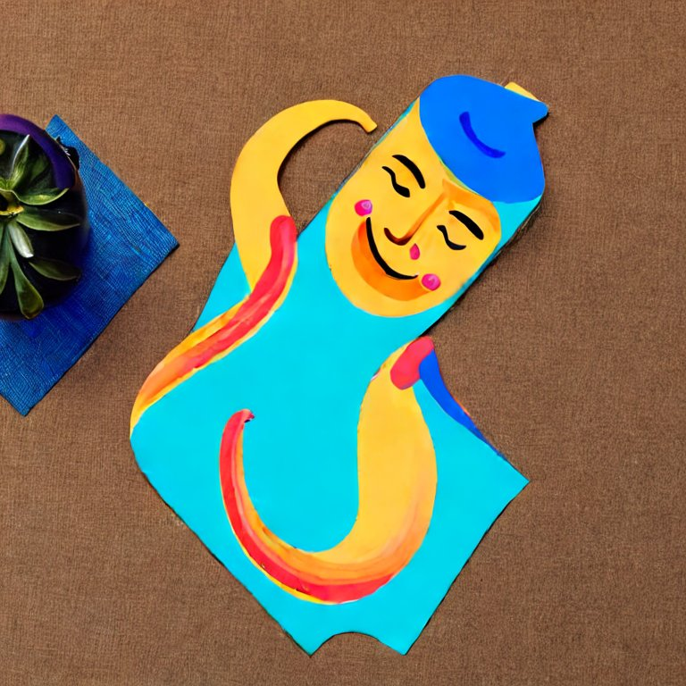Thank You!
SHAVASANA MALASANA VEER BHADRASANA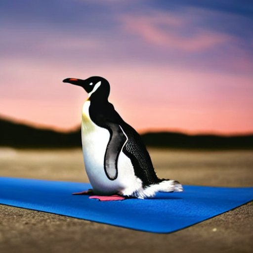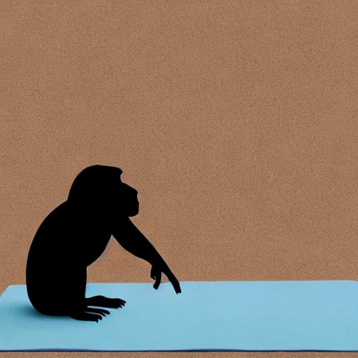